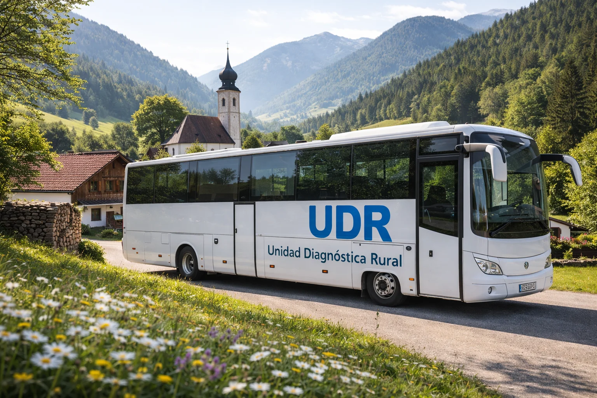
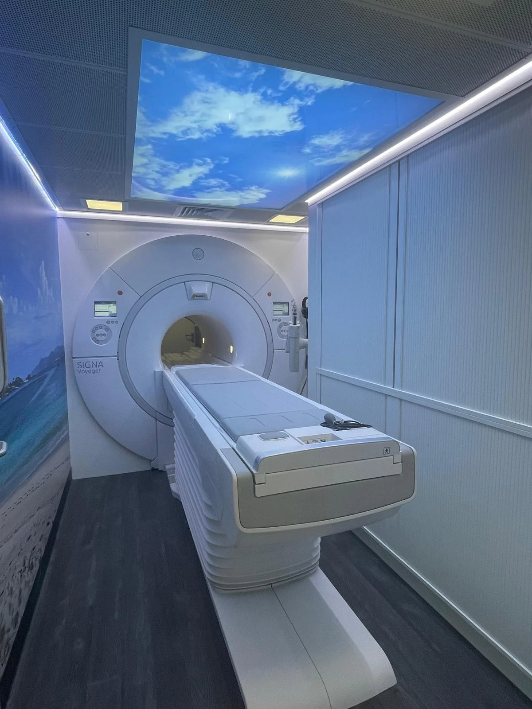

Acercando el diagnóstico donde más se necesita
Resonancia magnética móvil para poblaciones rurales
Diagnóstico en tu municipio
Sin desplazamientos
Informe en 24-48h
Calidad hospitalaria
El problema que resuelve UDR
🔷 Más de 5000 municipios españoles carecen de acceso a resonancia magnética
🔷 Sin resonancia propia, los centros comarcales dependen de los hospitales de referencia, colapsando sus listas de espera
🔷 Muchos recorren mas de 100Km solo para realizarse una resonancia


Cómo funciona
➤ Paso 1 - Derivación: El médico prescribe y se gestiona la cita del paciente en su localidad.
➤ Paso 2 - La prueba: La unidad móvil se desplaza hasta el municipio. El paciente realiza la resonancia en equipos de última generación.
➤ Paso 3 - El informe: Un radiólogo especializado analiza las imágenes y el informe llega al médico prescriptor.
¿Quieres llevar UDR a tu área?
Ponte en contacto con nosotros y estudiaremos cómo podemos ayudarte.
Contáctenos